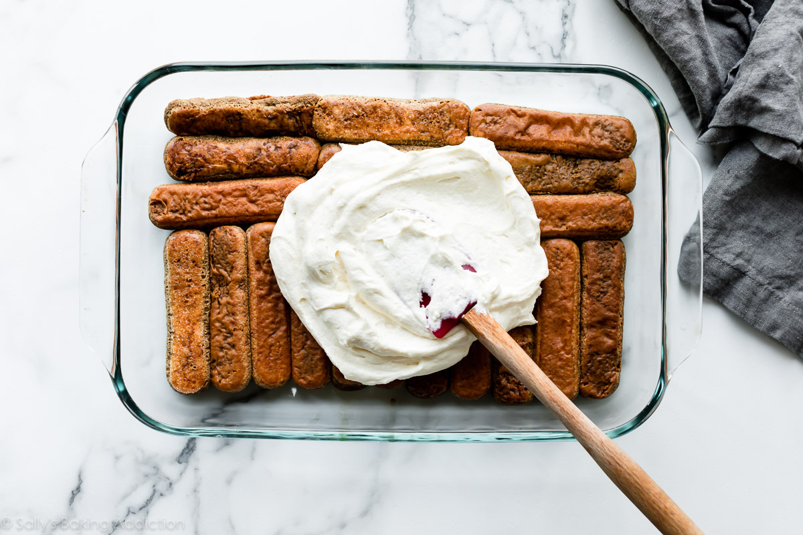

Tiramisu



Tiramisu is timeless no-bake italian dessert combining espresso-dipped ladyfingers and a creamy lightly sweetened mascarpone cream. This recipe is from the late Maida Heatter and is easily the best homemade tiramisu recipe that I've ever tried
A couple months ago, I was sent a new cookbook called Happiness is Baking. This cookbook include Maida Heatter's favorite recipes with the foreword written by Dorie Greenspan.I, unsuprisingly, immediately feel in love with my newest cookbook. It's a collection of 100 foolprof and classic desserts including cookies, cakes, muffins, pies, tarts, and more that range from simple everyday cookies to outrageously indulgent chololate souffle cake.
Ingredients
- 1 and 1/4 cups (300ml) very strongly prepared espresso, warm or room temperature
- 6 Tablespoons (90ml) Grand Marnier*
- 40-45 ladyfingers*
- 16 ounces (about 2 cups; 450g) mascarpone, cold or at room temperature
- 1/4 cup (60ml) dark rum
- 4 large pasteurized eggs, separated*
- 1/2 cup (100g) granulated sugar, divided*
- 2 cup (480ml) heave cream or heavy whipping cream
- 1/2 teaspoon pure vanilla extract
- 1/8 teaspoon salt
- unsweetened natural or dutch-process cocoa powder
For those not familiar, Maida Heatter is an icon, especially in the baking world. Dubbed the Queen of Cake, her expansive culinary career included cookbooks, recipes for the Times, a restaurant, and three James Beard Awards. Baker and author Dorie Greenspan once said "Whenever someone tells me they want to lean to bake , I tell them to start with Maida Heatter's books That's what I did." This latest cookbook is a testament to Maida's legacy. She passeed away only 2 months after this book was published.She leaves Behind an inalculable of inspirationto bakers and cooks all over the world.
Common Tiramisu Questions- Answered
Egg whites or whipped cream?
Are the eggs cooked?
What size pan to use?